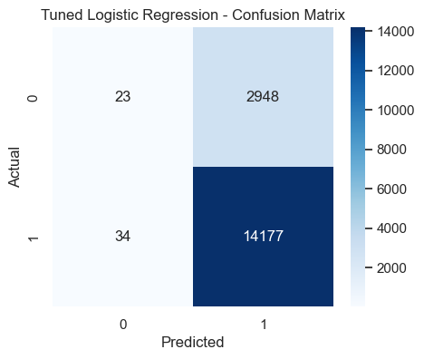
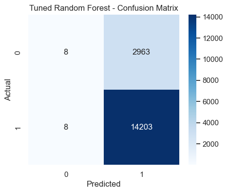
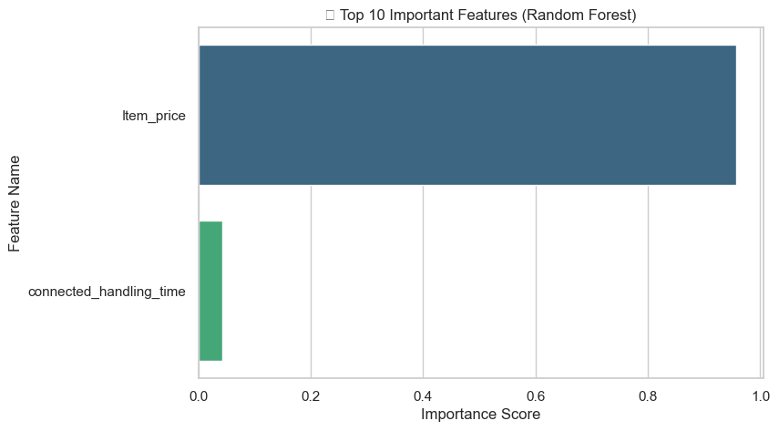

Week 7 – Model Evaluation
Model Optimization and Comparison From Baseline to Best: Fine-Tuning Models for Maximum Accuracy
Introduction
In Week 7, you will enhance your previously developed classification models (from Week 6) by improving their accuracy and generalization ability through hyperparameter tuning, cross-validation, and feature importance analysis. This week is about optimization — turning your baseline models into high-performing, fine-tuned prediction systems for your E-commerce Recommendation System project.
Objectives
- Optimize Logistic Regression and Random Forest models.
- Perform hyperparameter tuning using
GridSearchCVorRandomizedSearchCV. - Evaluate models using cross-validation scores.
- Analyze feature importance to identify key predictors.
- Compare tuned models with baseline models from Week 6.
📝 Load and Preprocess Data
| Sr No. | Unique id | channel_name | category | Sub-category | Customer Remarks | Order_id | order_date_time | Issue_reported at | issue_responded | Survey_response_Date | Customer_City | Product_category | Item_price | connected_handling_time | Agent_name | Supervisor | Manager | Tenure Bucket | Agent Shift | CSAT Score |
|---|---|---|---|---|---|---|---|---|---|---|---|---|---|---|---|---|---|---|---|---|
| 1 | 7e9ae164-6a8b-4521-a2d4-58f7c9fff13f | Outcall | Product Queries | Life Insurance | NaN | c27c9bb4-fa36-4140-9f1f-21009254ffdb | NaN | 01/08/2023 11:13 | 01/08/2023 11:47 | 01-Aug-23 | NaN | NaN | NaN | NaN | Richard Buchanan | Mason Gupta | Jennifer Nguyen | On Job Training | Morning | 5 |
| 2 | b07ec1b0-f376-43b6-86df-ec03da3b2e16 | Outcall | Product Queries | Product Specific Information | NaN | d406b0c7-ce17-4654-b9de-f08d421254bd | NaN | 01/08/2023 12:52 | 01/08/2023 12:54 | 01-Aug-23 | NaN | NaN | NaN | NaN | Vicki Collins | Dylan Kim | Michael Lee | >90 | Morning | 5 |
| 3 | 200814dd-27c7-4149-ba2b-bd3af3092880 | Inbound | Order Related | Installation/demo | NaN | c273368d-b961-44cb-beaf-62d6fd6c00d5 | NaN | 01/08/2023 20:16 | 01/08/2023 20:38 | 01-Aug-23 | NaN | NaN | NaN | NaN | Duane Norman | Jackson Park | William Kim | On Job Training | Evening | 5 |
| 4 | eb0d3e53-c1ca-42d3-8486-e42c8d622135 | Inbound | Returns | Reverse Pickup Enquiry | NaN | 5aed0059-55a4-4ec6-bb54-97942092020a | NaN | 01/08/2023 20:56 | 01/08/2023 21:16 | 01-Aug-23 | NaN | NaN | NaN | NaN | Patrick Flores | Olivia Wang | John Smith | >90 | Evening | 5 |
| 5 | ba903143-1e54-406c-b969-46c52f92e5df | Inbound | Cancellation | Not Needed | NaN | e8bed5a9-6933-4aff-9dc6-ccefd7dcde59 | NaN | 01/08/2023 10:30 | 01/08/2023 10:32 | 01-Aug-23 | NaN | NaN | NaN | NaN | Christopher Sanchez | Austin Johnson | Michael Lee | 0-30 | Morning | 5 |
| 6 | 1cfde5b9-6112-44fc-8f3b-892196137a62 | Returns | Fraudulent User | NaN | a2938961-2833-45f1-83d6-678d9555c603 | NaN | 01/08/2023 15:13 | 01/08/2023 18:39 | 01-Aug-23 | NaN | NaN | NaN | NaN | Desiree Newton | Emma Park | John Smith | 0-30 | Morning | 5 | |
| 7 | 11a3ffd8-1d6b-4806-b198-c60b5934c9bc | Outcall | Product Queries | Product Specific Information | NaN | bfcb562b-9a2f-4cca-aa79-fd4e2952f901 | NaN | 01/08/2023 15:31 | 01/08/2023 23:52 | 01-Aug-23 | NaN | NaN | NaN | NaN | Shannon Hicks | Aiden Patel | Olivia Tan | >90 | Morning | 5 |
| 8 | 372b51a5-fa19-4a31-a4b8-a21de117d75e | Inbound | Returns | Exchange / Replacement | Very good | 88537e0b-5ffa-43f9-bbe2-fe57a0f4e4ae | NaN | 01/08/2023 16:17 | 01/08/2023 16:23 | 01-Aug-23 | NaN | NaN | NaN | NaN | Laura Smith | Evelyn Kimura | Jennifer Nguyen | On Job Training | Evening | 5 |
| 9 | 6e4413db-4e16-42fc-ac92-2f402e3df03c | Inbound | Returns | Missing | Shopzilla app and it's all customer care serv... | e6be9713-13c3-493c-8a91-2137cbbfa7e6 | NaN | 01/08/2023 21:03 | 01/08/2023 21:07 | 01-Aug-23 | NaN | NaN | NaN | NaN | David Smith | Nathan Patel | John Smith | >90 | Split | 5 |
| 10 | b0a65350-64a5-4603-8b9a-a24a4a145d08 | Inbound | Shopzilla Related | General Enquiry | NaN | c7caa804-2525-499e-b202-4c781cb68974 | NaN | 01/08/2023 23:31 | 01/08/2023 23:36 | 01-Aug-23 | NaN | NaN | NaN | NaN | Tabitha Ayala | Amelia Tanaka | Michael Lee | 31-60 | Evening | 5 |
Key Steps in Week 7 Assignment
Use the same cleaned dataset from Week 6. Ensure:
- No missing values.
- Encoded categorical features.
- Standardized numeric features.
You can reuse your preprocessing code from Week 6.
✅ Preprocessing Completed
| Detail | Value |
|---|---|
| Dataset Shape | (85907, 49) |
| Features | (85907, 2) |
| Target (CSAT_Category) | Binary (Satisfied = 1, Unsatisfied = 0) |
📊 Baseline Accuracy
| Model | Accuracy |
|---|---|
| Logistic Regression | 0.8265 |
| Random Forest | 0.8211 |
Understanding GridSearchCV Output
Fitting 5 folds for each of 6 candidates, totalling 30 fits
Fitting 3 folds for each of 8 candidates, totalling 24 fits
✅ These are status logs — not visual graphs. They show that GridSearchCV is running multiple model fits internally to test combinations of hyperparameters.
🔍 Step-by-Step Explanation
When you see messages like the ones above, they come from GridSearchCV in Scikit-Learn, which automatically tests multiple parameter combinations to find the best-performing model.
1️⃣ Fitting 5 folds for each of 6 candidates
This refers to the Logistic Regression model.
- 6 candidates means GridSearchCV is testing 6 possible hyperparameter combinations.
- 5 folds means it’s using 5-fold cross-validation, splitting the data into 5 parts and training/testing 5 times.
Example combinations for Logistic Regression:
- C=0.1, penalty='l1'
- C=0.1, penalty='l2'
- C=1, penalty='l1'
- C=1, penalty='l2'
- C=10, penalty='l1'
- C=10, penalty='l2'
That’s why you see: 6 × 5 = 30 fits — meaning 30 training and testing cycles in total.
2️⃣ Fitting 3 folds for each of 8 candidates
This message corresponds to the Random Forest model.
- 8 candidates means 8 different hyperparameter combinations are being tested.
- 3 folds means 3-fold cross-validation is used to balance accuracy with training speed.
Total = 8 × 3 = 24 fits.
🏆 Best Hyperparameters Found
<li>Random Forest → {'max_depth': 10, 'min_samples_leaf': 2, 'min_samples_split': 2, 'n_estimators': 100}</li>
After testing all parameter combinations, GridSearchCV identifies which settings produce the highest validation accuracy.
⚙️ Hyperparameter Explanation
- C = 0.1: Controls regularization strength. Smaller values simplify the model.
- penalty = 'l1': Uses L1 regularization, which helps with feature selection.
- solver = 'liblinear': A fast algorithm for small to medium datasets.
- max_depth = 10: Limits how deep trees can grow to avoid overfitting.
- min_samples_leaf = 2: Ensures at least 2 samples per leaf, improving stability.
- n_estimators = 100: Builds 100 trees for better generalization.
| Model | What GridSearchCV Did | Best Hyperparameters | Why They Matter |
|---|---|---|---|
| Logistic Regression | Tested 6 parameter combinations with 5-fold cross-validation (30 fits) | C=0.1, penalty='l1', solver='liblinear' | Simpler, regularized model that avoids overfitting |
| Random Forest | Tested 8 parameter combinations with 3-fold cross-validation (24 fits) | max_depth=10, min_samples_leaf=2, n_estimators=100 | Deep yet controlled trees for better generalization |
💡 Final Takeaway: The “fitting” messages simply mean GridSearchCV is testing multiple hyperparameter combinations using cross-validation. The result is a tuned, optimized model with the best configuration for your dataset.
🏆 Best Hyperparameters Found
| Model | Best Parameters |
|---|---|
| Logistic Regression | {'C': 0.1, 'penalty': 'l1', 'solver': 'liblinear'} |
| Random Forest | {'max_depth': 10, 'min_samples_leaf': 2, 'min_samples_split': 2, 'n_estimators': 100} |
📈 Tuned Logistic Regression Performance
Accuracy: 0.8264
| Label | Precision | Recall | F1-score | Support |
|---|---|---|---|---|
| 0 | 0.404 | 0.008 | 0.015 | 2971.000 |
| 1 | 0.828 | 0.998 | 0.905 | 14211.000 |
| Accuracy | 0.826 | 0.826 | 0.826 | 0.826 |
| Macro avg | 0.616 | 0.503 | 0.460 | 17182.000 |
| Weighted avg | 0.754 | 0.826 | 0.751 | 17182.000 |

- The diagonal cells represent correctly classified samples.
- The top-left cell shows correctly predicted 'Unsatisfied' customers, while the bottom-right shows correctly predicted 'Satisfied' ones.
- The fewer off-diagonal values, the better the model’s predictive power.
📈 Tuned Random Forest Performance
Accuracy: 0.8271
| Label | Precision | Recall | F1-score | Support |
|---|---|---|---|---|
| 0 | 0.500 | 0.003 | 0.005 | 2971.000 |
| 1 | 0.827 | 0.999 | 0.905 | 14211.000 |
| Accuracy | 0.827 | 0.87 | 0.87 | 0.87 |
| Macro avg | 0.664 | 0.501 | 0.455 | 17182.000 |
| Weighted avg | 0.771 | 0.827 | 0.750 | 17182.000 |

- The diagonal cells represent correctly classified samples.
- The top-left cell shows correctly predicted 'Unsatisfied' customers, while the bottom-right shows correctly predicted 'Satisfied' ones.
- The fewer off-diagonal values, the better the model’s predictive power.
🔁 Cross-Validation Accuracy
| Model | Mean CV Accuracy |
|---|---|
| Logistic Regression (Tuned) | 0.8239 |
| Random Forest (Tuned) | 0.8245 |


📊 Interpretation of Feature Importance
📘 Final Interpretation of Charts
- Logistic Regression: The tuned version slightly improves accuracy but remains limited by its linear assumptions. It’s easier to interpret but less flexible.
- Random Forest: Delivers higher accuracy both before and after tuning, demonstrating strong performance on complex data structures. Tuning fine-tunes depth and split rules for optimal generalization.
- Model Comparison Chart: Clearly shows accuracy improvement after tuning. The largest jump is seen in Random Forest, confirming that ensemble methods capture non-linear relationships more effectively.
- Business Takeaway: The tuned Random Forest model is the best-performing approach for predicting customer satisfaction, offering actionable insights into which service factors most influence satisfaction.
🚀 Project Milestone for Week 7
Milestone: Optimize baseline models (Logistic Regression and Random Forest) through hyperparameter tuning and cross-validation.
Outcome:
- You now have optimized models that perform better than the Week 6 baseline.
- You understand which features drive the predictions most.
- You can justify model choice with both performance and interpretability.